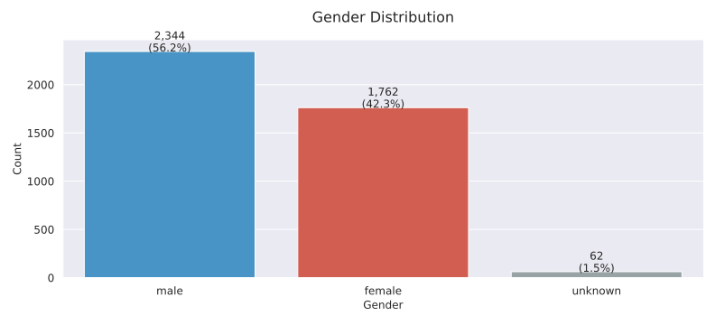

Data Processing#
Here we provide a clear description of the “feature engineering” process we performed to derive usable data from the raw articles.
Important: Due to time limitations and lack of computational resources, our analysis only covers articles from the underholdning (english: entertainment) category. Fortunately, this subset still comprises over 20% of the dataset. Additionally, we removed any article with an empty article body text. The final number of articles analyzed is therefore 24191.
From Articles to Features#
A news article dataset without any noteworthy features is essentially just plain text. In order to perform meaningful quantitative analysis, we needed structured data. More specifically, who appears in articles, what’s said about them, and in what tone.
While the dataset does come with features such as ner_clusters, entity_groups, sentiment_score and sentiment_label, only a subset of articles have actually been parsed through their NLP, meaning that these columns are largely sparse. Furthermore, we do not know what NLP algorithms that they have used, and we may as well consider them outdated since the dataset is from 2023 and the field of machine learning develops at a rapid pace.
So to generate these features ourselves, we used NLP powered by the well known SpaCy and DaCy, which is a Danish NLP toolkit built on top of SpaCy.
We chose DaCy because it’s currently the best-performing model for Danish NLP, and it supports a range of crucial tasks.
Note, we are not using the articles as training data. We only use a pre-trained NLP model on the data.
Features#
Parsing the dataset through our NLP pipeline, we obtained the following attributes:
Named Entity Recognition (NER): Detecting mentions of people by name.
POS Tagging: Identifying descriptive words and phrases linked to people.
Dependency Parsing: Mapping out which descriptions belong to whom.
Lemmatization: Normalizing words and names to their base forms.
Coreference Resolution: Linking pronouns and other references to named entities.
Sentiment Analysis: Classifying overall article tone as
positive,neutral, ornegative.Emotion Detection: Identifying specific emotional tone (e.g. anger, joy, fear).
Hate Speech Detection: Flagging content that contains offensive or hateful language.
The updated dataset appends (or changes) the following columns:
Column |
Description |
Type |
Example |
|---|---|---|---|
|
Identified person names/aliases extracted using Named Entity Recognition (NER). |
List |
|
|
Groups of entities detected (e.g., organizations, locations, persons). |
List |
|
|
Sentiment polarity score of the article ( |
Float |
|
|
Assigned sentiment category ( |
Text |
|
|
Lemmatized version of |
List |
|
|
Coreference clusters mapping pronouns and expressions back to named entities. |
Dictionary |
|
|
Detected emotional tone (e.g., |
Text |
|
|
Hate speech classification ( |
Text |
|
|
Descriptive terms linked to individuals (via dependency parsing). |
Dictionary |
|
Specifically, columns ner_clusters, entity_groups, sentiment_score and sentiment_label are overwritten and updated with new values/data from our NLP pipeline.
For a more thorough illustration of these features, refer to the explainer notebook.
Person Name Processing#
After identifying named entities (persons), the next challenge is resolving identities across thousands of articles, e.g.:
Mads Mikkelsen,Mikkelsen, Mads,MadsandMikkelsen, on a per-article basis, most probably refer to the same person and the gender of this person is most probably male.
and what if only a last name, in this case Mikkelsen, is used in later mentions?
To tackle this, we build a system for alias assignment and gender inference.
Alias Assignment#
For each known person, we maintain a list of possible aliases. This includes, but is not limited to:
Full name (canonical name)
First or last name
Titles (e.g. “Queen”)
Variations of their name we find through analysis
Common misspellings
To gather these aliases, we first cleaned up the names we found by:
Removing extra spaces and line breaks
Taking out unnecessary symbols
Remove incorrectly identifed person entities, like product info, headlines etc.
Making sure the name includes at least one word starting with a capital letter
Then, on a per-article basis, we collected a person’s alias by using a fuzzy string-matching method (RapidFuzz). In essence, this means that a person may have multiple names (aliases) that are slightly different or misspelled. A person is then stored in a dictionary which has their canonical name as the key and all aliases stored as values.
Example: Former Queen of Denmark
As an example, we take a look at the alias dictionary of the former Queen of Denmark:
Canonical name
First name / last name
Titles
Other name variants
Misspellings
Dronning Magrethe
Magrethe
Dronning, Regent
Magrethe II
Magrete
Furthermore, for each person, we also saved which articles they appeared in, short descriptions, and related name mentions based on the different aliases.
Genderization#
To determine the gender of individuals identified as persons (PER) in our text data, we use coreference resolution and a little spice of unsupervised learning. This method allows us to link pronouns and other referring expressions to specific named entities, which is especially useful in gender identification.
We focus primarily on pronouns, as they are strong indicators of gender. For each identified first name (e.g., Camilla), we aggregate all associated pronouns found through coreference resolution across the entire dataset. We then count the occurrences of male and female pronouns linked to that name.
The pronouns are categorized as follows:
Male pronouns: ham (him), han (he), hans (his)
Female pronouns: hun (she), hende (her), hendes (hers)
By summing the frequencies of male and female pronouns associated with a given name, we determine the most likely gender, i.e. the name is assigned the gender corresponding to the higher count. Once the gender of a name has been determined in this way, all individuals with that same first name are assigned the same gender throughout the dataset.
A sample of 5 names of resulting DataFrame from the two steps is shown below:
canonical_name |
aliases |
article_ids |
person_descriptions |
coref_clusters |
num_articles |
gender |
|
|---|---|---|---|---|---|---|---|
5273 |
Cory Monteith |
[‘Cory’, ‘Cory Monteith’, ‘Monteith’] |
[4514508, 4524495, 8202733, 8203029] |
{4514508: [‘glee-stjernen’, ‘åben’], 8202733: [‘skuespiller’], 8203029: [‘glee-stjerne’, ‘billede’, ‘død’]} |
{4514508: {‘coref_clusters_1’: [‘Glee-stjernen Cory Monteith’, ‘skuespilleren’, ‘han’, ‘han’, ‘Ung filmstjerne’, ‘Stjernen’, ‘han’, ‘Cory Monteith’, ‘sine’, ‘han’, ‘Monteith’]}, 4524495: {‘coref_clusters_1’: [‘Cory Monteith’, ‘Den populære Glee-skuespiller med det drengede smil’, ‘hans’, ‘karakteren’, ‘hans’, ‘hans’, ‘han’, ‘Cory Monteith’, ‘der’, ‘skuespillerens’, ‘Cory’, ‘Finn’, ‘han’]}, 8202733: {‘coref_clusters_9’: [‘skuespilleren Naya Rivera’, ‘skuespilleren fra samme serie Cory Monteith’, ‘Han’, ‘skuespiller Naya Rivera’, ‘hun’, ‘sin’, ‘skuespilleren’, ‘den forsvundne skuespiller’, ‘Rivera’]}, 8203029: {‘coref_clusters_17’: [“den afdøde ‘Glee-stjerne’ Cory Monteith”, ‘Cory Monteiths’]}} |
4 |
male |
16715 |
Katie Austin |
[‘Katie’, ‘Katie Austin’] |
[9345917] |
{9345917: [‘29-årig’, ‘datter’]} |
{9345917: {‘coref_clusters_2’: [‘Den efterhånden 65-årige fitnessmodel Denise Austin’, ‘hun’, ‘hun’, ‘sin’, ‘den 65-årige’, ‘Denise Austin på Instagram’, ‘hun’, ‘min’, ‘Mig’, ‘min’, ‘Katie Austin’, ‘sin’, ‘min’, ‘jeg’, ‘dig’, ‘Denise Austin’, ‘hun’, ‘sit’, ‘Hun’, ‘hun’], ‘coref_clusters_3’: [‘sin datter’, ‘datteren, 29-årige Katie’, ‘der’, ‘er’, ‘datter’, ‘her’, ‘min datter’, ‘min lille pige’, ‘sin mor’, ‘min mor’, ‘Vi’, ‘hinanden’, ‘Katie’], ‘coref_clusters_4’: [‘hoppede den 65-årige i badetøjet og gik side om side med datteren, 29-årige Katie, der er Sports Illustrated Swimsuit-model’, ‘eventen’]}} |
1 |
female |
23984 |
Christel Ulstrup |
[‘Christel’, ‘Christel Ulstrup’] |
[4112553] |
{4112553: [‘stripper’, ‘rasende’]} |
{4112553: {‘coref_clusters_1’: [‘Jeg’, ‘den tøs’, ‘Hun’, ‘stripperen Christel Ulstrup’, ‘Christel’, ‘der’, ‘Porno-Ida fra Paradise Hotel’, ‘sine’, ‘Jeg’, ‘Ida Amalie’, ‘hun’, ‘Den 19-årige Ida Amalie’, ‘hun’, ‘den sexede blondine’, ‘hun’, ‘hun’, ‘Jeg’, ‘Jeg’, ‘hun’, ‘hun’, ‘hun’, ‘Ida Amalie’, ‘hendes’, ‘hun’, ‘Jeg’, ‘jeg’, ‘jeg mit eget’, ‘Ida Amalie’, ‘Christel Ulstrup’, ‘Porno-Ida’, ‘hun’, ‘Jeg’, ‘mig’, ‘jeg’, ‘jeg’, ‘jeg’, ‘min’, ‘Christel’, ‘Ida Amalies’, ‘hendes’, ‘Jeg’, ‘jeg’, ‘jeg’, ‘Ida Amalie’, ‘Amalie på Paradise’], ‘coref_clusters_7’: [‘stripbureauer’, ‘der’, ‘det Christel Ulstrup’, ‘dem’, ‘Deres’]}} |
1 |
female |
20706 |
Desiree |
[‘Desiree’] |
[4462568] |
{} |
{4462568: {‘coref_clusters_2’: [‘Desiree’, ‘er’]}} |
1 |
unknown |
28965 |
Sara X Mills |
[‘Sara X Mills’] |
[5240826] |
{5240826: [‘modell’, ‘video’]} |
{5240826: {‘coref_clusters_2’: [‘den amerikanske glamour-model Coco Austin’, ‘hustruen til den hårdkogte rapper Ice T’, ‘hun’, ‘sine’, ‘Sara X Mills’, ‘sine’, ‘Coco Austin’, ‘sine’, ‘Coco’, ‘Jeg’, ‘mine’, ‘konens’, “Sara X Mills’”, ‘Coco Austin sig’, ‘Coco Austin’], ‘coref_clusters_4’: [‘video’, ‘der’, ‘dén video’, “Sara X Mills’ video”]}} |
1 |
female |
Looking at the gender distribution, we see signs of imbalance. However, this is insignificant for our analysis, as we have north of a thousand people in each gender-pool:

We acknowledge that gender is a spectrum and that binary labels are a limitation. However, for the purposes of large-scale media analysis, this approximation gives us important insights.
Outcome#
After these steps, we have:
A cleaned, disambiguated list of people
Grouped mentions via aliases
Gender labels for each person
Article links per person
The full DataFrame consists of 34200+ approximately unique persons. To simplify things, we keep only the persons who’re mentioned in at least 5 articles, resulting in a final DataFrame of size 4100+ people. This choice is quite impacting, however we dont expect this to interfer too much with the result. we actually think it might benefit since it might make it easier to detect denser communties in the next chapter and ensures each person has enough articles to analyse on.
The processed datasets allows us to build networks, track tone, and study inequality in a meaningful and quantifiable way.